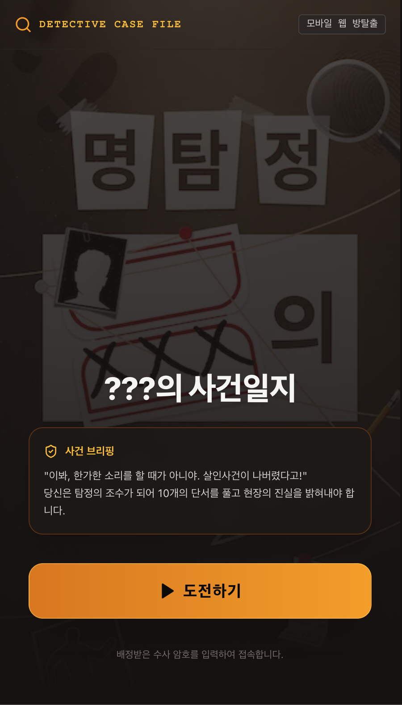

01
웹 시작 화면 (Landing & Start)
명탐정 방탈출 메인 진입 및 도전 준비서비스 접속 시 나타나는 메인 랜딩 화면입니다. 미스터리한 탐정 사무소 분위기의 그래픽과 함께 플레이어 닉네임 입력 후 [도전하기] 버튼을 클릭하여 방탈출에 참가할 수 있습니다.
- 직관적인 온보딩: 닉네임 입력만으로 즉시 게임 세션 생성
- 공식 링크: https://detective-escape-room.vercel.app
